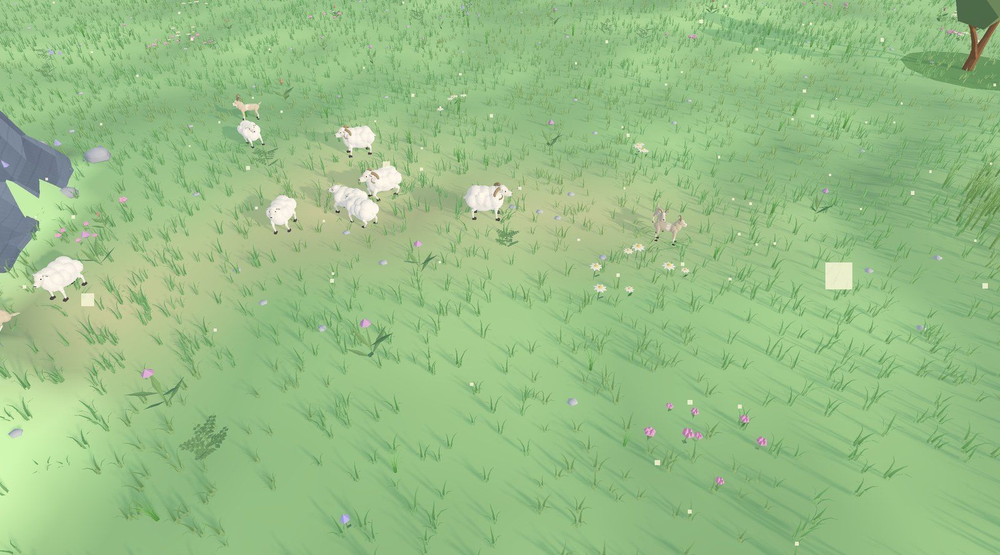
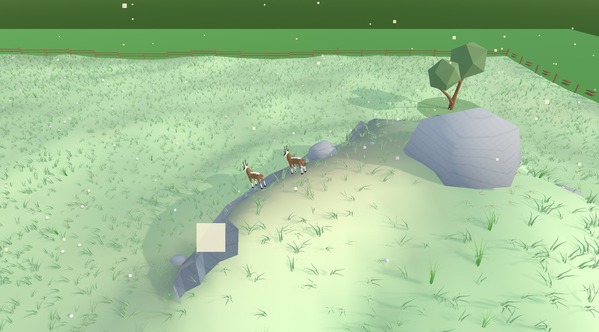
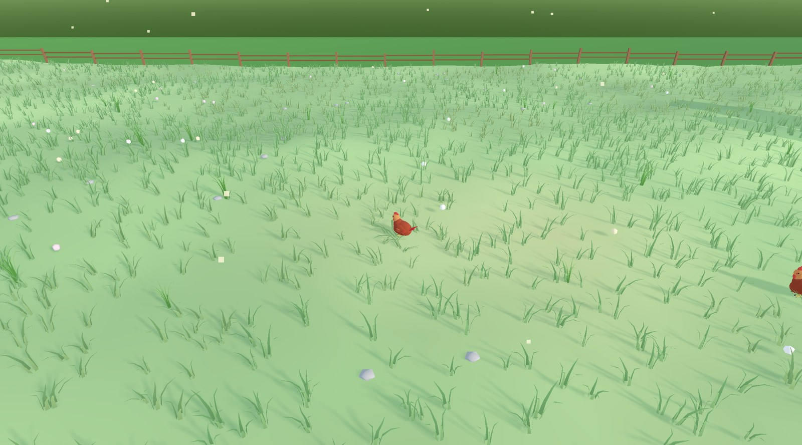
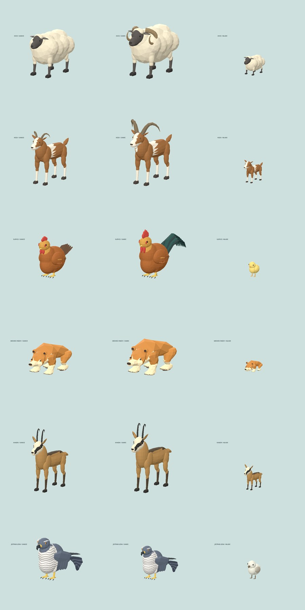
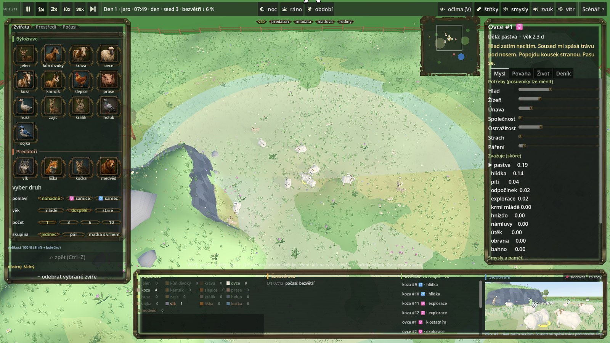

Linux — kdyby to hlásilo Permission denied, chybí právo ke spuštění:
chmod +x TheHide.x86_64. Potřebuje ovladače s Vulkanem; bez nich zkus
./TheHide.x86_64 --rendering-driver opengl3.
Co to je
Pozorovací simulátor chování zvířat. Stavíš louku (kopce, rybníky, potoky, lesíky, krmítka),
vkládáš do ní zvířata a pak sleduješ, co se stane. Začít můžeš i se sadou Salaš:
ovce, kozy a vlk. Nesbíráš body a nikam nepostupuješ — je tu co pozorovat.
Zvláštní na tom je, že vidíš zvířeti do hlavy: v pravém panelu běží jeho úvaha —
co právě zvažuje, jak si to boduje, co vidí, cítí a slyší, co si pamatuje a čeho se bojí.
Když husa uteče, dá se dohledat proč.
Stav hry v září 2026, verze 0.1.228.
Kdo na louce žije
Sedmnáct druhů: jelen, kůň divoký, kráva, ovce, koza, kamzík, slepice, prase, husa, zajíc,
králík, holub a sojka; ze šelem vlk, liška, kočka a medvěd. Každý má vlastní smysly, rychlost,
potravu a strach z ostatních — a vlastní model pro samici, samce i mládě.
Ovce před nebezpečím prchají pohromadě jedním směrem; zatoulaná
se ozve bečením a stádo si ji najde i přes celou louku. Koza okusuje keře a před vlkem vyleze
na sráz, kam za ní nemůže. Kamzík dělá totéž na skále. Slepice se hrabou v trávě,
popelí se a kohout ráno kokrhá. Medvěd si chodí po svém — i vlk mu uhne z cesty.

Salaš hned po spuštění: ovce se pasou v houfu, kozy se toulají opodál.

Kamzíci na skále. Vlk pod nimi chvíli chodí a pak hon vzdá.

Dvorek: slepice se hrabou v trávě, mezi nimi obchází liška.
Chůze není jedno tempo pro všechny. Medvěd chodí mimochodem
(obě nohy jedné strany naráz), kopytníci diagonálně. Zvíře, které se nikam nežene, chvíli jde
a pak se jen zastaví a rozhlíží se. A běh je cval, ne zrychlené kmitání nohama.
Při chůzi zvířeti kývá hlava v rytmu kroku, krk pruží proti pohybu těla a váha se
přenáší z nohy na nohu. A když se otáčí na místě, přešlapuje — nestočí se jako věž.

Rohy mláděti dorůstají s věkem. Jestřáb má model hotový, ale do hry zatím
nepřilétl — simulace neumí létajícího lovce.
Rozhraní se přizpůsobí oknu
Celé rozhraní se škáluje s velikostí okna. V nastavení si vybereš rozlišení okna
i velikost rozhraní. Tlačítka a ikony jsou ručně kreslené v bronzovém stylu.

Rozhraní v okně 1920×1080. Vlevo katalog všech druhů, dole populace,
vpravo panel mysli vybraného zvířete.
Ze hry
Salaš po spuštění: stádo se pase pohromadě, kozy se toulají opodál.Pravý panel je jádro hry: co zvíře zvažuje, jak si to boduje a proč uteklo.
(Starší záběr, rozhraní od té doby dostalo novou grafiku.)Husy na rybníku. Voda je pro ně útočiště — liška za nimi nepůjde.
Co všechno se v tom počítá
Zvíře se nerozhoduje podle scénáře. Každou chvíli si boduje,
co teď dává největší smysl, a vyhrává nejlepší nápad — proto se dva kusy stejného druhu
zachovají pokaždé jinak.
Zrak má zorný kužel a dosah podle druhu, v noci se krátí. Z kopce je vidět dál,
při pastvě se hlava sklání a zvíře vidí míň.
Čich nese vítr: predátora zvíře ucítí proti větru, po větru skoro vůbec.
Sluch podle hlučnosti — běžící zvíře nebo lov je slyšet i za zády a přes porost.
Sojka umí varovat celou louku.
Paměť míst: kde byla tráva, voda, úkryt — a kde mě honili. Vzpomínky slábnou,
ale napajedlo si zvíře pamatuje dlouho, protože rybník se nestěhuje.
Tráva je skutečná zásoba. Spasené místo dorůstá, v zimě neroste. Stádo, které
stojí moc dlouho na jednom místě, si ho vypase. Medvěd a prase po sobě nechávají
rozryté flíčky, které do tří dnů zarostou.
Stádo má vůdkyni — přesun vede nejstarší klisna nebo laň, hřebec jistí zezadu.
Krávy se při spatření vlka stáhnou k sobě a postaví se čelem; telata utíkají za matku.
Lov: predátor si vybírá kořist podle druhu, vzdálenosti a toho, jestli je osamělá.
Plíží se, útočí zblízka, sprint mu dojde. Úlovek dojídá a vrací se k němu, i když je
sto metrů daleko.
Hnízdo je skutečný objekt s vejci. Pták na nich sedí, liška a kočka je vybírají
a matka o tom ví.
Mláďata: koloušek a zajíček první den leží schovaní a matka je chodí navštěvovat.
Ptáčatům nosí potravu rodič — a když je jich moc, dostane nejdřív ten nejprůbojnější.
Rodokmen se drží a příbuzní se nepáří.
Roční období: rok trvá šestnáct dnů. V zimě zamrzne rybník — husy tím ztrácejí
útočiště a vlk přejde po ledu — tráva neroste a stromy jsou holé.
Krajina rozhoduje: rybníkem neplavec neprojde a obchází ho, přes potok vede brod
nebo padlá kláda, kopec má místy sráz jen pro lezce a z vrcholu je dál vidět.
Rozehraná hra se ukládá sama a u každého zvířete je záložka Život: kdy se narodilo,
kolik přečkalo zim, koho potkalo a o co přišlo.